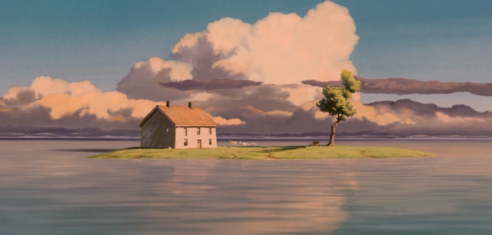
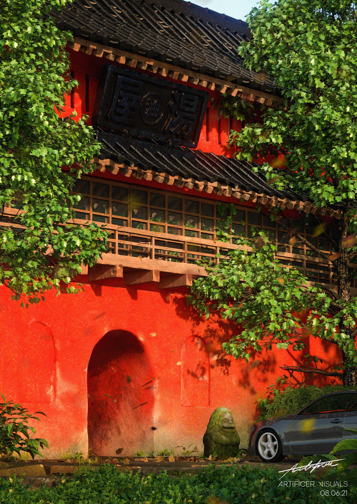
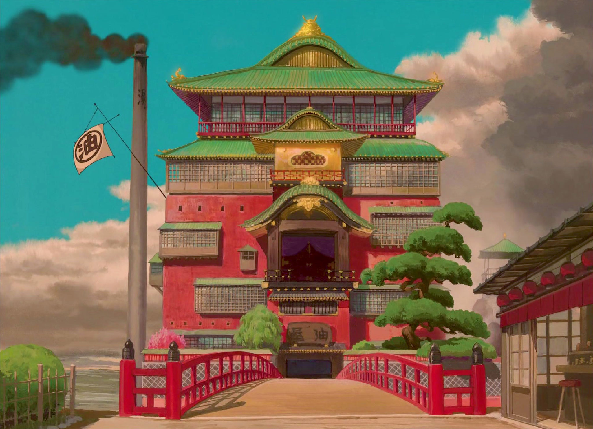
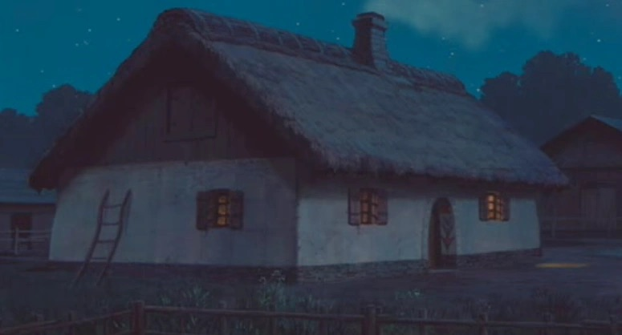

The Spirit Realm is a mysterious world of magical landscapes, sacred spaces, and iconic locations that shape Chihiro’s journey.

Geography: The Spirit Realm
The Spirit Realm is closely connected to the Human World but is far cleaner, less technologically advanced, and filled with magical beings and supernatural powers. Much of the realm is surrounded by vast waters, and spirits travel between locations by luxurious boats or the one-way Sea Train, which stops at six stations throughout the world.

The Red Gate
The Red Gate serves as the entrance between the Human World and the Spirit Realm, acting as the mysterious threshold Chihiro crosses into the spirit world. When active, it appears as an elaborate clock tower with colorful plaster, decorative pillars, and grand tunnel openings, but when inactive it transforms into a simple moss-covered tunnel hidden beneath pale brick.

The Bathhouse
The Bathhouse is the most prominent location in the Spirit Realm as well as the core setting for Spirited Away. It is located on one of the realm's many islands and is surrounded by various Food Stalls and restaurant districts. It opens around sunset and is most active during the night. The Bathhouse is located on the island Yūya.

Zeniba’s Cottage
Zeniba's Cottage is another important location in Spirited Away. It is located in the sixth and last station of the one-way train's route and is surrounded by uncluttered space, several other cottages and undisturbed nature. Whether this location in the realm is more active during the day or night is not mentioned or elaborated on in the film. The location is called Swamp Bottom.